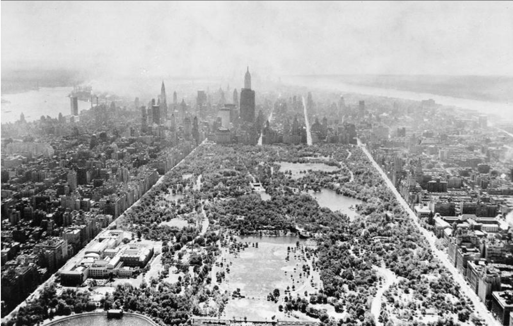

Join us on a tour of some of New York City’s major landmarks that (perhaps) you have not yet heard of. Here in this city, nearly everything you’re looking for, you can find. No matter your background or interest, it is likely that there is a landmark or a restaurant or a venue or a place of worship that will call you. That said we all know the canon, of sorts. The most visited and named of NYC landmarks. Perhaps you think of Times Square. Or the Statue of Liberty. We think the historic places named here should be added to that list of must-sees. Let’s all remember, that as of fall 2025, our federal government is actively trying to erase many of our shared histories. The Gulf of Mexico becomes the Gulf of America; the government page documenting the names of missing and murdered Indigenous women is deleted; Executive Order 14168 declares biological sex to be the sole determination of gender; Diversity Equity and Inclusion initiatives are being canceled and defunded, and the list goes on. In this time of attempted erasure, we highlight the enduring landmarks of communities who have long withstood attempts to disappear their stories. From the past and into the present, these landmarks speak.